Menu bergambarA menu with pictures
Kategori, carian dan gambar setiap hidangan. Yang habis ditanda terus.Categories, search and a photo for every dish. Sold-out dishes are marked.
Warung ialah sistem pesanan untuk kedai makan. Imbas kod QR di meja, pilih makanan, pesanan terus masuk ke skrin dapur.An ordering system for eateries. Guests scan the QR at the table, pick their food, and the order reaches the kitchen.
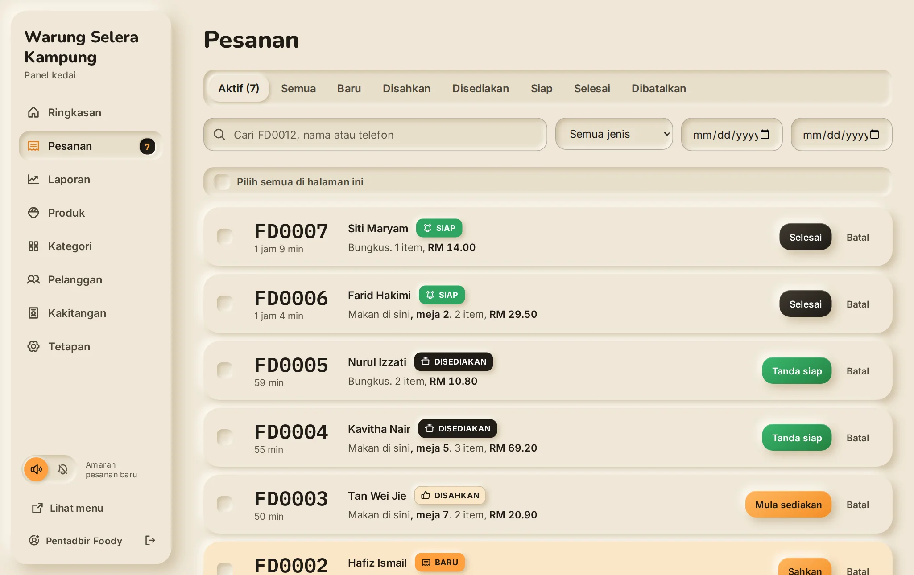
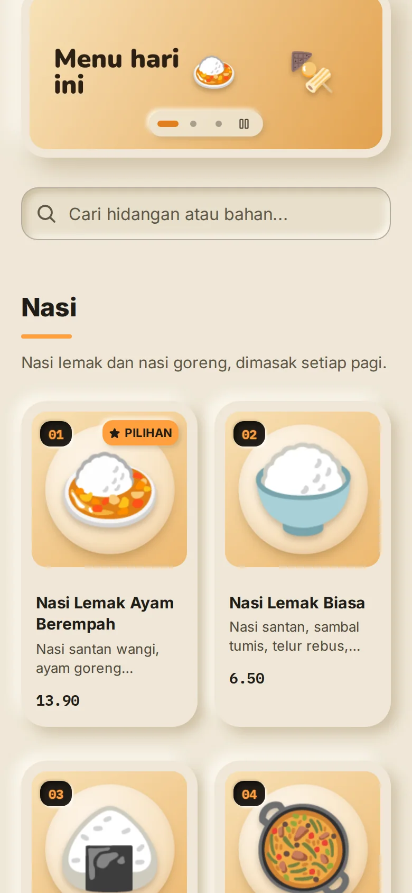
Kak, order saya dah siap ke belum?Is my order ready yet?
Eh, saya tak minta sambal lebih!I didn't ask for extra sambal!
Berapa semua ni, bang?How much is the total?
Dengan Warung, pelanggan nampak sendiri status dan jumlah. Anda sambung masak.With Warung, guests see the status and the total themselves. You keep cooking.
Pelanggan imbas kod QR di meja. Nombor meja sudah terisi.Guests scan the QR at the table. The table number is already filled in.
Pilih makanan dan tambahan, hantar. Bayar di kaunter atau transfer QR.Pick food and extras, send it. Pay at the counter or by QR transfer.
Pesanan masuk ke skrin anda dengan bunyi. Satu butang untuk setiap peringkat.The order arrives on your screen with a chime. One button for each stage.
Pelanggan nampak status sampai makanan siap.Guests watch the status until the food is ready.
Semuanya dalam telefon, tanpa pasang aplikasi.All on their phone, with no app to install.
Kategori, carian dan gambar setiap hidangan. Yang habis ditanda terus.Categories, search and a photo for every dish. Sold-out dishes are marked.
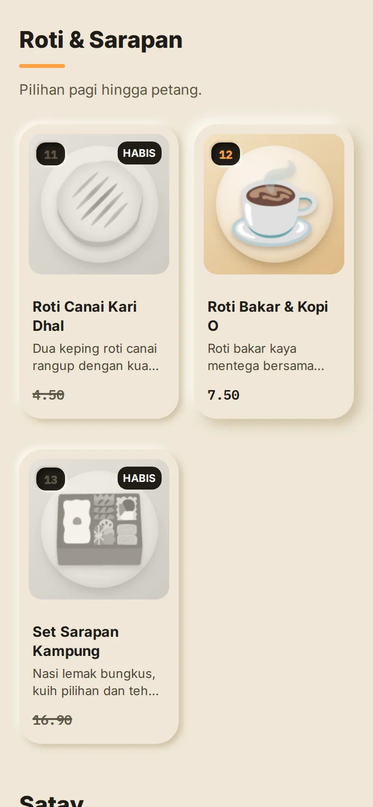
Bila baki sampai kosong, hidangan ditanda habis tanpa anda sentuh apa-apa. Bila tinggal sedikit, pelanggan nampak "Tinggal 6".When the count hits zero, the dish marks itself sold out without you touching a thing. When only a few are left, guests see "Only 6 left".
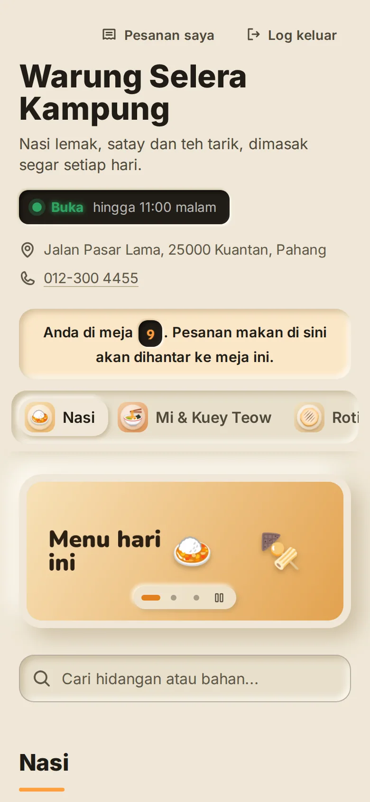
Pautan membawa nombor meja, jadi pelanggan tak perlu menaip.The link carries the table number, so nobody has to type it.
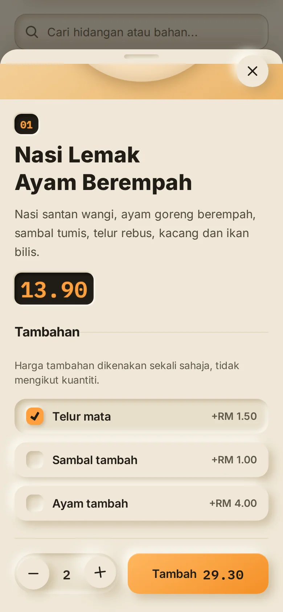
Telur mata, sambal lebih, ayam tambah. Anda tetapkan harga setiap satu.Fried egg, extra sambal, more chicken. You set the price of each.
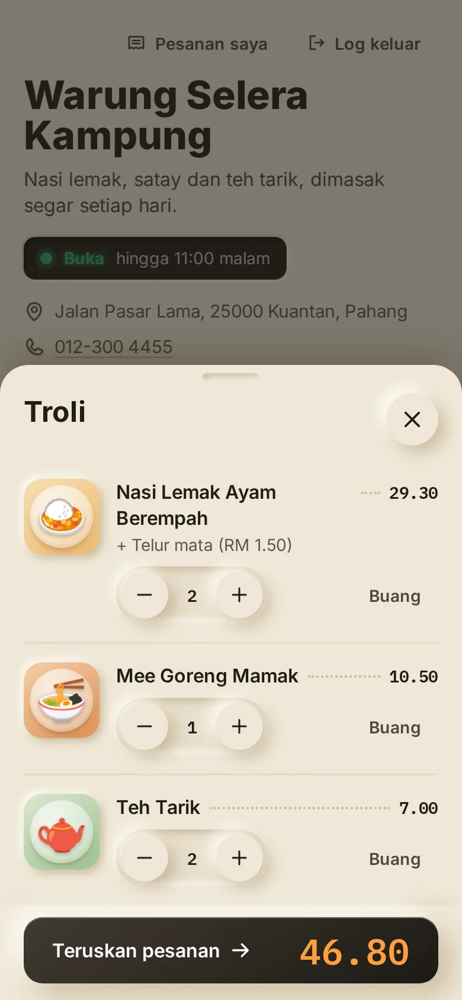
Jumlah dikira terus. Tambah, kurang atau buang sebelum hantar.The total updates as you go. Add, reduce or remove before sending.
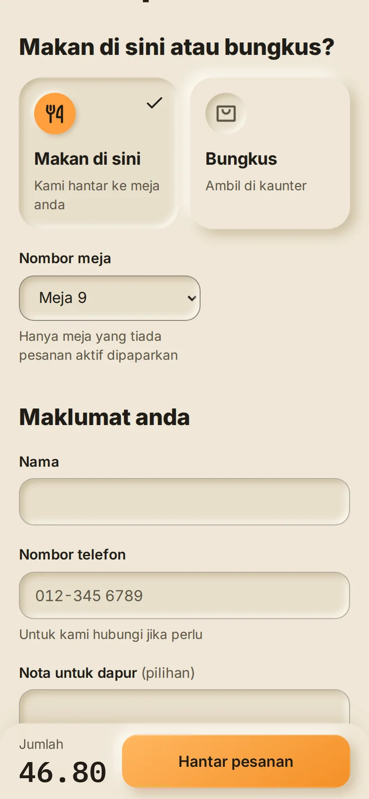
Hanya meja yang kosong dipaparkan. Nota untuk dapur pun boleh.Only free tables are offered. There is a note for the kitchen too.
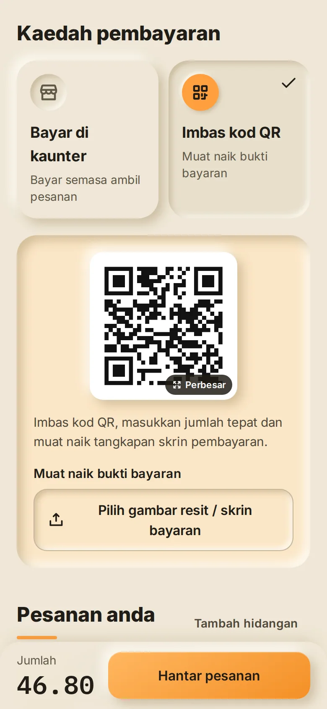
Transfer ikut kod QR kedai, muat naik bukti, dan staf anda sahkan.Transfer to your shop's QR, upload the proof, and your staff confirm it.
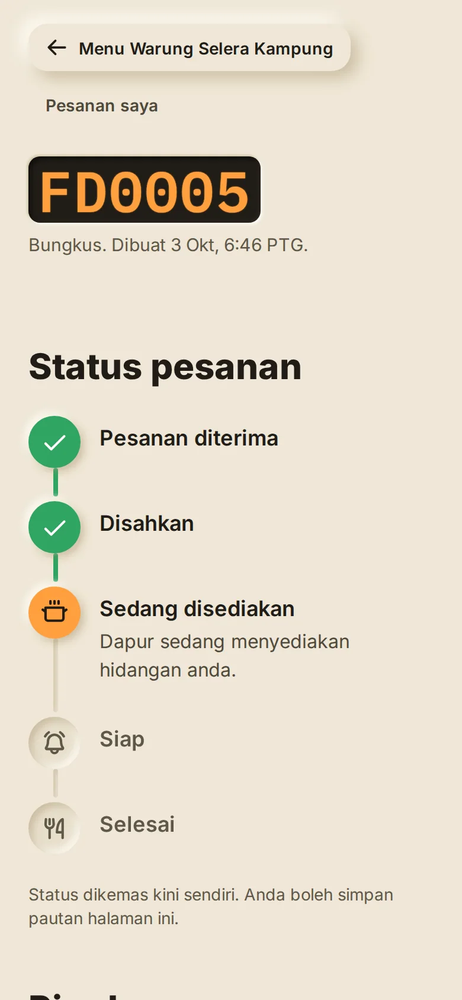
Diterima, disahkan, disediakan, siap. Halaman dikemas kini tanpa perlu muat semula.Received, confirmed, preparing, ready. The page refreshes on its own.
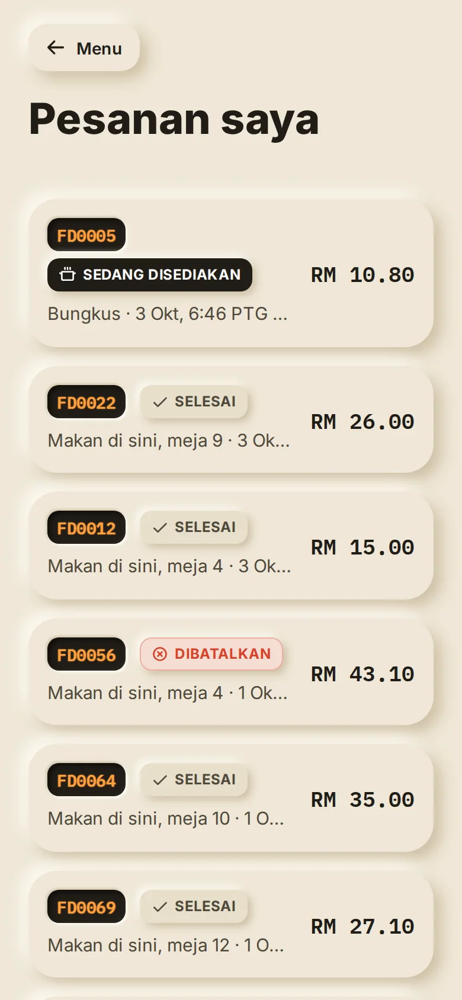
Daftar sekali. Pesanan lama dan resit ada dalam akaun pelanggan.Register once. Past orders and receipts live in the guest's account.
Ketik mana-mana gambar untuk besarkan.Tap any picture to enlarge it.
Pelanggan di depan kaunter, tiada telefon di tangan. Staf ketik gambar hidangan, pilih bungkus atau meja yang kosong, terima bayaran tunai atau QR dan lihat baki duit untuk dipulangkan. Pesanan terus masuk ke dapur, stok dan bahan turun macam biasa, dan resit boleh dicetak. Nama dan nombor telefon tak wajib. Berfungsi di tablet, telefon dan komputer.The customer is at the counter with no phone out. Staff tap a dish photo, choose takeaway or a free table, take cash or QR and see the change to give back. The order goes straight to the kitchen, stock and ingredients drop as usual, and the receipt can be printed. Name and phone number are optional. Works on a tablet, a phone and a computer.
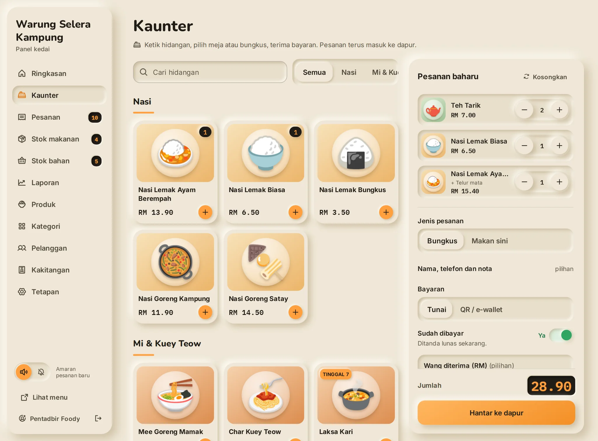
Pesanan, jualan, purata setiap pesanan dan jam yang paling sibuk. Hidangan dan bahan yang hampir habis turut ditunjuk. Dikemas kini setiap 15 saat.Orders, sales, the average order and your busiest hours. Dishes and ingredients running low are listed too. Refreshes every 15 seconds.
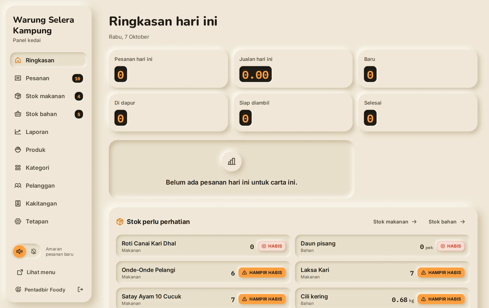
Pesanan baru berbunyi dan boleh muncul sebagai notifikasi pelayar. Satu butang untuk sahkan, sediakan dan tandakan siap.New orders sound an alert and can pop up as a browser notification. One button each to confirm, prepare and mark ready.
Resit A5 untuk satu pesanan, atau banyak sekali gus dari laporan.An A5 receipt for one order, or many at once from the reports.
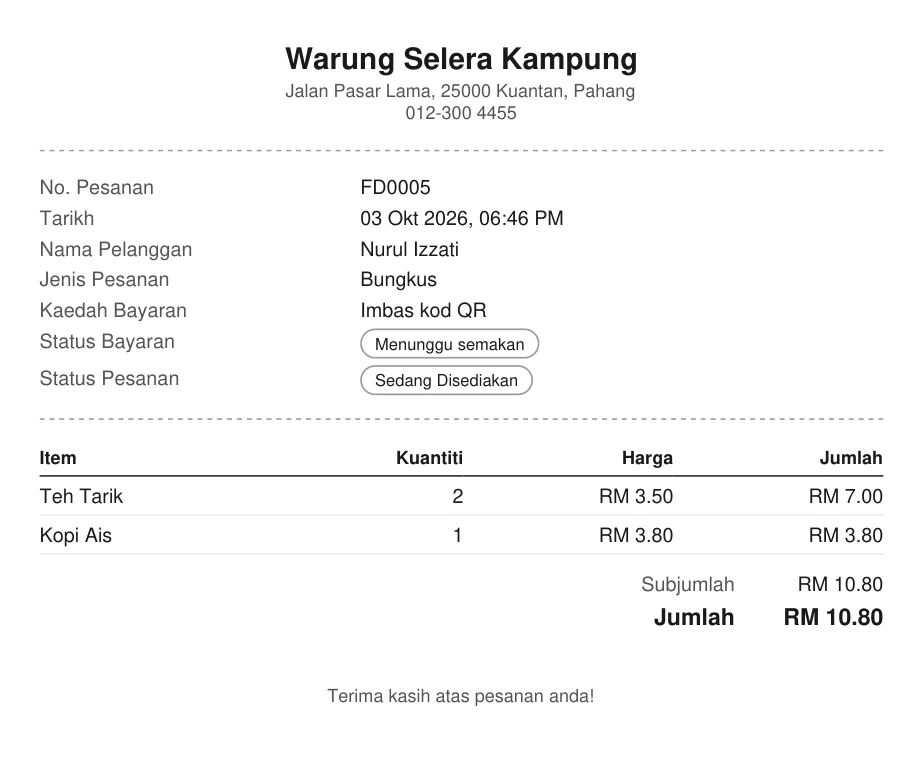
Lihat bukti bayaran, sahkan, ubah kuantiti atau nama. Setiap peringkat direkod.See the proof of payment, confirm it, change quantities or names. Every stage is logged.
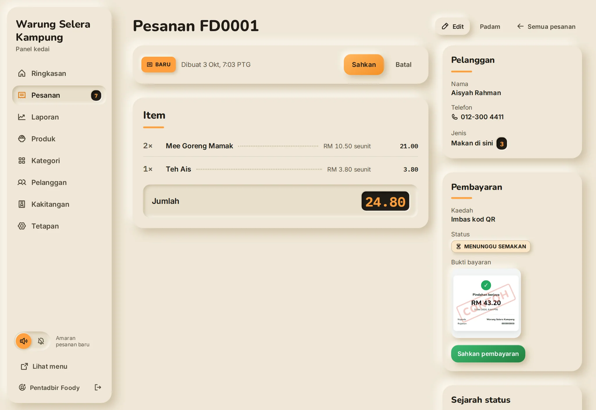
Suis ada dijual dan habis. Cari ikut nama, kategori atau ketersediaan.A switch for in stock and sold out. Search by name, category or availability.
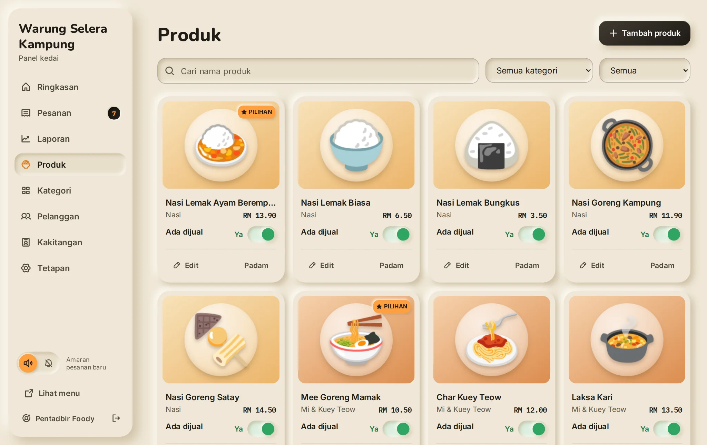
Baki ditolak sendiri bila pesanan masuk dan dipulangkan bila dibatalkan. Tambah stok, catat yang terbuang atau betulkan baki lepas kira rak, semuanya tercatat siapa dan bila. Hidangan hampir habis muncul di Ringkasan. Pelanggan nampak terus bila sesuatu sudah habis. Bila sesuatu habis atau hampir habis, panel beri bunyi dan pop-up, walaupun anda sedang di halaman lain.The count drops by itself when an order comes in and returns when it's cancelled. Add stock, log waste or correct the count after checking the shelf, all recorded with who and when. Dishes running low show up on the summary. Guests see at once when something is gone. When something runs out or runs low, the panel chimes and pops up, even if you are on another page.
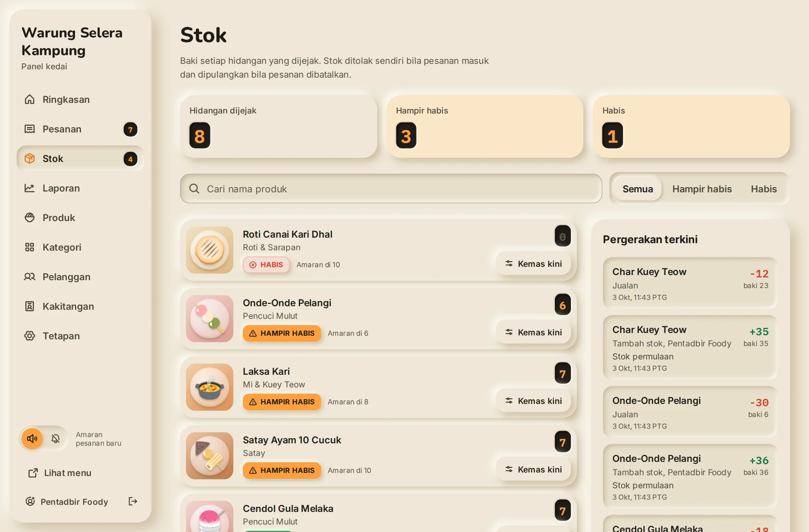
Untuk setiap hidangan, tulis berapa beras, ayam atau santan yang digunakan untuk satu hidangan. Bila hidangan dijual, bahan ditolak sendiri daripada stok bahan. Bila pesanan dibatalkan, bahan dipulangkan. Anda juga nampak kos bahan setiap hidangan dan berapa baki selepas bahan, supaya harga jual tak dianggar-anggar.For each dish, write how much rice, chicken or coconut milk goes into one portion. When the dish sells, the ingredients come off the stock by themselves. If the order is cancelled, they go back. You also see what each dish costs in ingredients and what is left after them, so prices stop being guesswork.
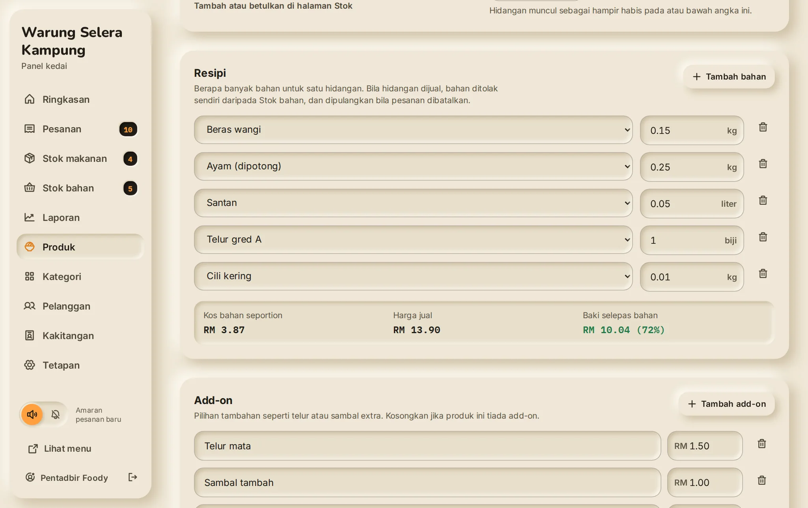
Senarai bahan di dapur dengan harga seunit, baki dan nilai stok. Staf catat bila beli, guna atau terbuang. Bahan yang ada dalam resipi turun sendiri bila hidangan dijual, dan setiap pergerakan ditunjuk bersama nombor pesanannya. Kalau baki jadi negatif, maksudnya bahan sudah dipakai tetapi pembelian belum dicatat.The kitchen's shelf list with a price per unit, the count and the stock value. Staff log what was bought, used or thrown out. Ingredients in a recipe drop by themselves when a dish sells, and every movement shows its order number. A negative count means the ingredient was used but the purchase was never logged.
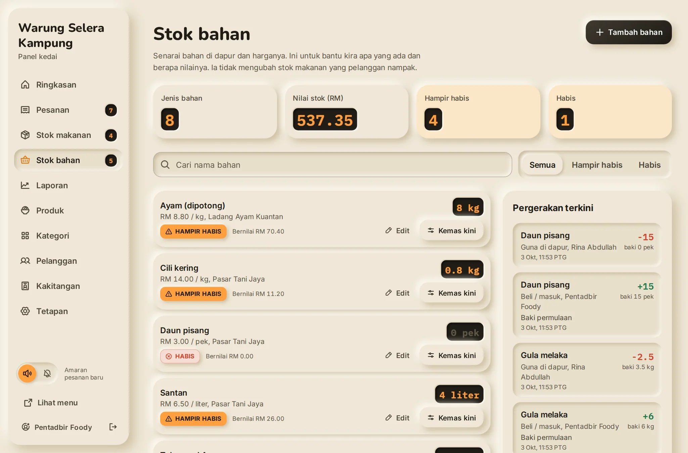
Gambar, harga, penerangan dan tambahan untuk setiap hidangan. Hidupkan "Jejak stok" untuk hidangan yang anda kira.Photo, price, description and extras for each dish. Switch on "Track stock" for dishes you count.
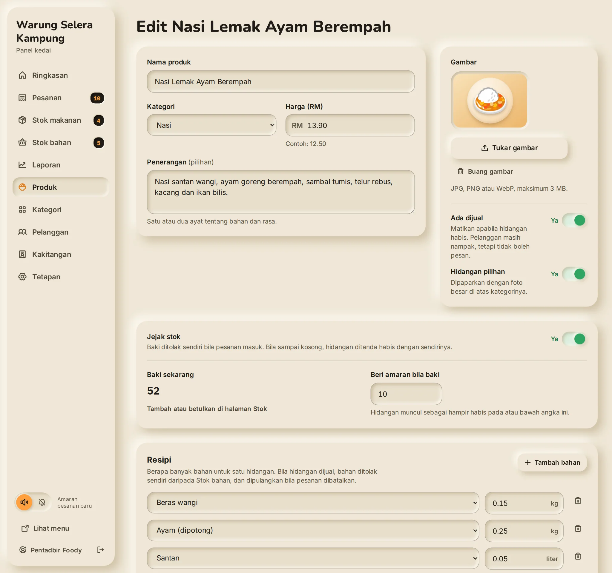
Susun ikut kehendak. Nombor hidangan (01, 02...) mengikut susunan.Arrange them as you like. Dish numbers (01, 02...) follow the order.
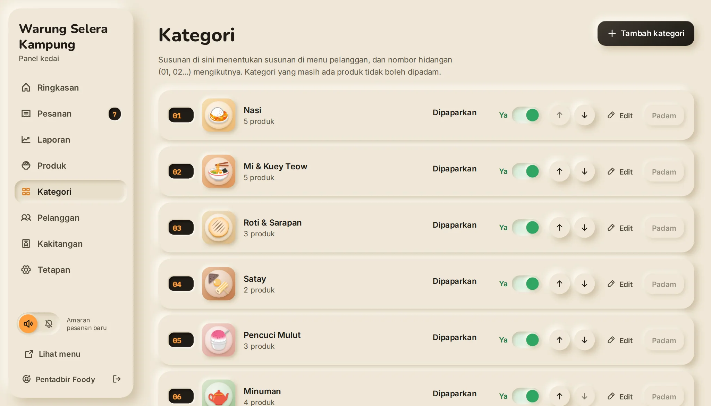
Gambar di atas menu pelanggan, dicrop sekata secara automatik.Pictures above the guest menu, cropped to one size automatically.
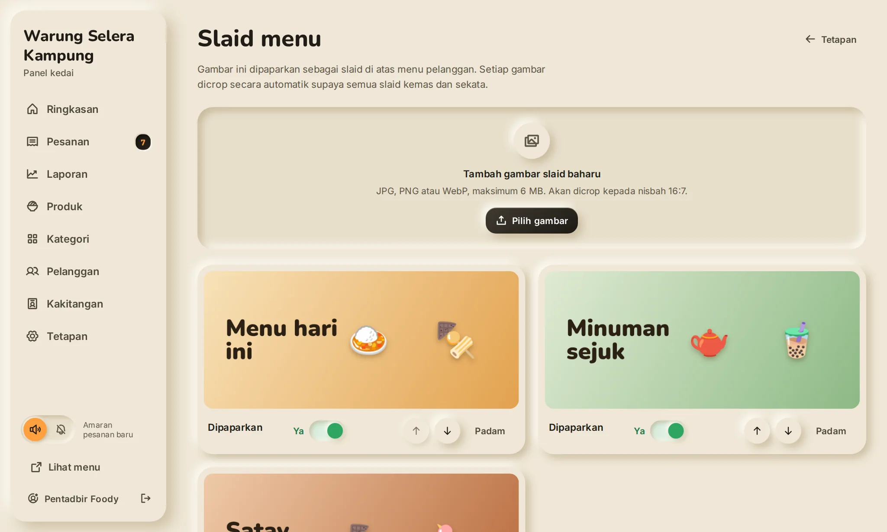
Pesanan selesai ikut hari, minggu, bulan atau tahun, dengan sejarah yang boleh ditapis.Completed orders by day, week, month or year, with a history you can filter.
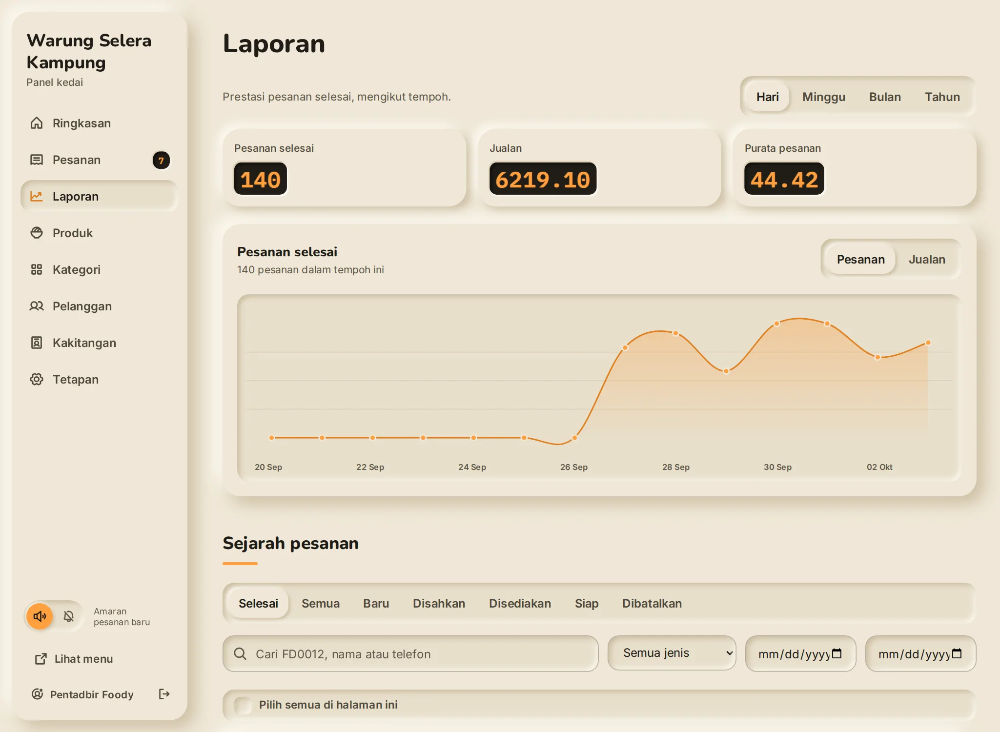
Siapa yang pesan, berapa kali, dan bila kali terakhir.Who orders, how often, and when they last did.
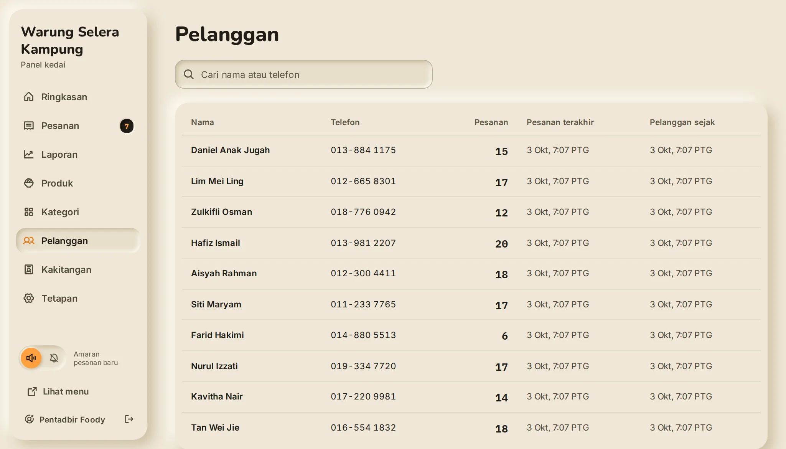
Admin dan staf. Akaun baharu perlu diluluskan, dan boleh digantung serta-merta.Admins and staff. New accounts need approval, and can be suspended instantly.
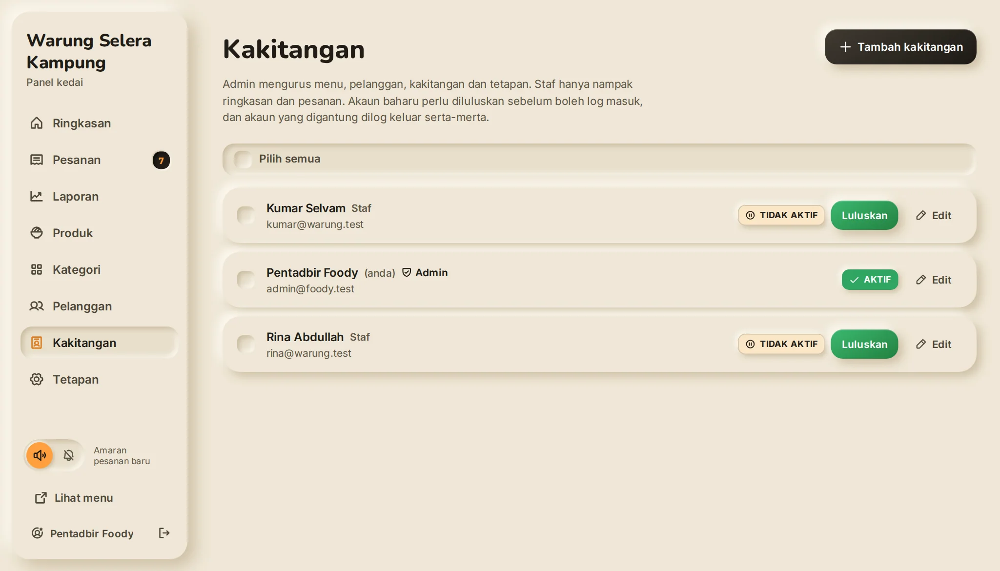
Waktu buka, bilangan meja, makan sini atau bungkus, kod QR bayaran.Opening hours, number of tables, dine-in or takeaway, payment QR.
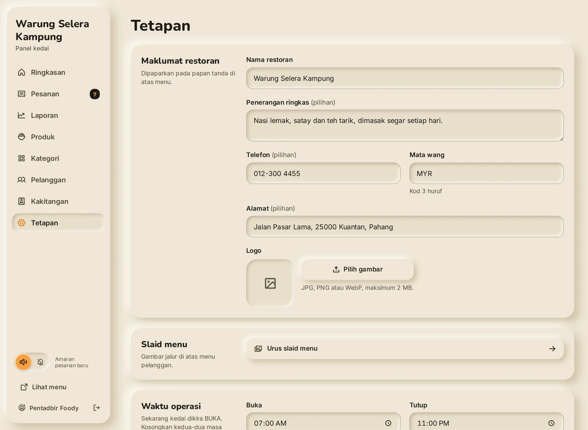
Bayar bulanan. Hosting dan penyelenggaraan sistem saya uruskan.Billed monthly. I take care of hosting and upkeep.
RM199sebulana month
Bulan pertama termasuk RM100 bayaran sekali sahaja untuk menyediakan laman jualan.The first month includes a one-time RM100 to set up the sales page.
Mesej saya di WhatsApp. Cerita sedikit tentang kedai anda, saya tunjuk bahagian yang paling berguna.Message me on WhatsApp. Tell me a little about your eatery and I'll show you the parts that matter most.